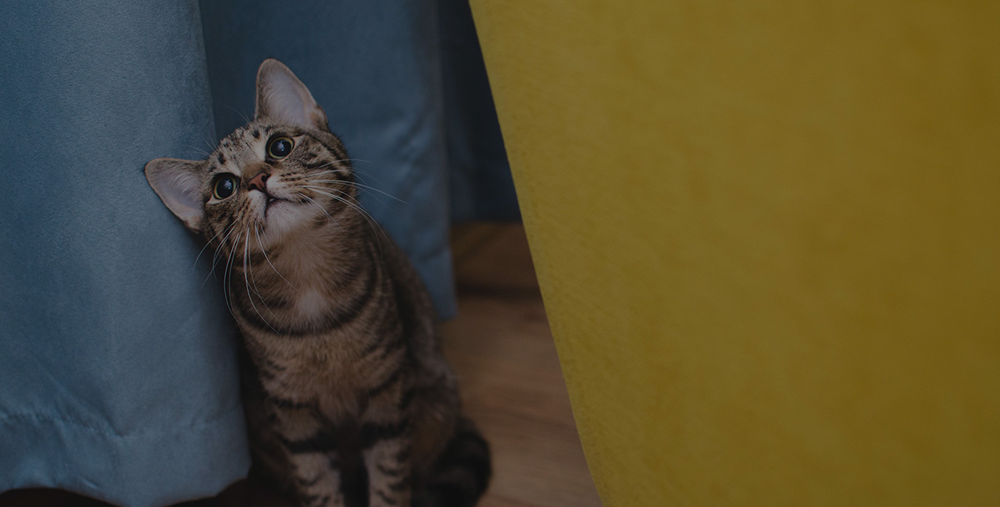

Photo Credit: Pixabay
A therapy cat is a trained and evaluated animal that provides comfort, emotional support, and companionship in settings like hospitals, schools, and care facilities.
No. Therapy cats provide emotional comfort to many people, while service animals are individually trained to perform specific tasks for one person with a disability.
This Table helps clarify the differences between common support animals.
| Type of Animal | Primary Role | Training Required | Who They Help |
|---|---|---|---|
| Therapy Cats | Provide emotional comfort in group settings | Yes (certification required) | Hospitals, schools, care facilities |
| Service Animals | Perform specific tasks for a disability | Extensive specialized training | One individial with a disability |
| Emotional Support Animals | Provide comfort and companionship | No formal training required | One individual (prescribed support) |
Start with basic socialization, ensuring your cat is comfortable around new people, environments, and gentle handling. From there, connect with a recognized certification organization to begin the evaluation process.
Certification typically takes between 2–6 months, depending on your cat’s temperament, consistency of training, and readiness for evaluation.
Not at all. C.A.T.S. offers a variety of volunteer opportunities, including event support, outreach, and educational initiatives.
Organizations can partner with us by completing the partnership form on our Volunteer page. We work with shelters, clinics, and community programs to expand access to therapy-cat initiatives.
Therapy cats visit places like hospitals, nursing homes, schools, counseling centers, and community events.
A good therapy cat is calm, friendly, patient, and comfortable being handled by different people in various environments.
Yes, most therapy programs require cats to be evaluated and certified to ensure safety and effectiveness during visits.